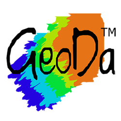

Software and Tools for GIS and Data Visualization
Geographic Information Systems (GIS)
QGIS
 |
QGIS is a professional GIS application that is built on top of and proud to be itself Free and Open Source Software (FOSS). QGIS is a user friendly Open Source Geographic Information System (GIS) licensed under the GNU General Public License. QGIS is an official project of the Open Source Geospatial Foundation (OSGeo). It runs on Linux, Unix, Mac OSX, Windows and Android and supports numerous vector, raster, and database formats and functionalities. |
Grass GIS
 |
GRASS, Geographic Resources Analysis Support System, is a powerful computational engine for raster, vector, and geospatial processing. It supports terrain and ecosystem modeling, hydrology, data management, and imagery processing. With a built-in temporal framework and Python API, it enables advanced time series analysis and rapid geospatial programming, optimized for large-scale analysis on various hardware configurations. GRASS GIS (Geographic Resources Analysis Support System) is a powerful spatial modeling tool with support for raster, vector, and temporal data. |
Geoda
|  | GeoDa is a free and open source software tool that serves as an introduction to spatial data science. It is designed to facilitate new insights from data analysis by exploring and modeling spatial patterns. GeoDa is a user-friendly application that introduces spatial data science through spatial autocorrelation and regression modeling. |
Data Visualization
Flourish
 |
Flourish lets users create interactive visualizations with minimal coding, ideal for storytelling and journalism. Flourish was created to enable everyone to tell stories with data. Launched in 2018, the tool is used by a huge community of creators to inform tens of millions of viewers every day. |
Rawgraphs
 |
RAWGraphs is an open source data visualization framework built with the goal of making the visual representation of complex data easy for everyone. |
Statistical and Data Science Tools
RStudio Desktop
 |
RStudio is a powerful IDE for R and Python. While the core IDE is open source, RStudio now exists under the Posit brand with both open and pro versions. |
Other Useful Tools
OpenRefine
A powerful tool for cleaning messy datasets, especially tabular data.
- Website: https://openrefine.org
- Platform: Web-based, runs locally
- Use it for: Data cleaning, transformation, reconciling datasets
Inkscape
Free and open source vector graphics editor. Useful for refining maps exported from QGIS or RAWGraphs.
- Website: https://inkscape.org
- Platform: Windows, macOS, Linux
- Use it for: Map post-processing, infographic design
JupyterLab
An open-source notebook environment for coding, visualization, and documentation in Python and R.
- Website: https://jupyter.org
- Use it for: Data analysis, Python scripting, integrating with
geopandas,matplotlib,folium, etc.